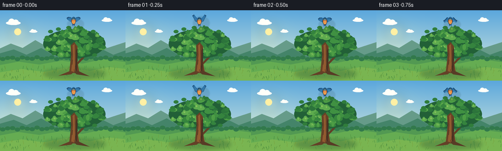
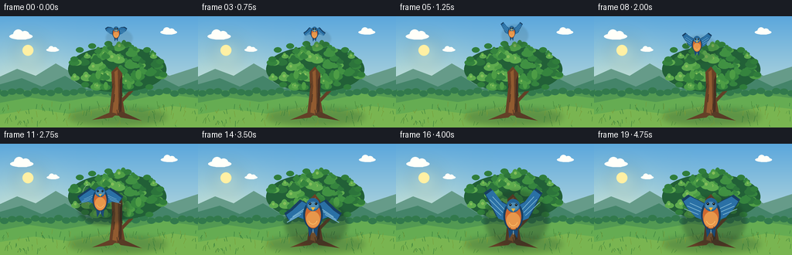

CODING AGENTS AS PIXEL WORLD MODELS
traex/GPT-5.6-Sol · dynamic_spatial_relationship_0046
点击播放 · 原生 RGB 像素
此结果可播放，但该运行尚未通过最终提交审核。页面展示不代表评测通过。
逐轮保存的候选
回放视频、检查图与代码变化。
每份候选均可单独播放。实际图片检查记录在下方工具轨迹中。
候选 01播放与检查图
点击播放 · 原生 RGB 像素


展开代码变化
--- 上一保存版本
+++ 本次保存版本
@@ -0,0 +1,246 @@
+from pathlib import Path
+import json, math, random
+import numpy as np
+from PIL import Image, ImageDraw, ImageFilter
+import artifact_io
+
+CASE_DIR = Path(__file__).resolve().parent
+SPEC = json.loads((CASE_DIR / "task_spec.json").read_text())
+W, H, N = SPEC["width"], SPEC["height"], SPEC["frames"]
+S = 4
+WW, HH = W*S, H*S
+random.seed(46)
+
+# Helpers working in high-resolution canvas coordinates.
+def q(v): return int(round(v*S))
+def box(b): return tuple(q(v) for v in b)
+def pts(seq): return [(q(x), q(y)) for x, y in seq]
+
+def cubic(p0, p1, p2, p3, steps=20):
+ out=[]
+ for k in range(steps+1):
+ t=k/steps; a=1-t
+ out.append((a**3*p0[0]+3*a*a*t*p1[0]+3*a*t*t*p2[0]+t**3*p3[0],
+ a**3*p0[1]+3*a*a*t*p1[1]+3*a*t*t*p2[1]+t**3*p3[1]))
+ return out
+
+def smoothstep(x):
+ x=max(0.0,min(1.0,x)); return x*x*(3-2*x)
+
+# Fixed natural variation gives a detailed but temporally coherent tree.
+leaf_specs=[]
+for _ in range(78):
+ # Elliptical crown around the tree; denser in the middle.
+ a=random.random()*math.tau
+ r=(random.random()**0.64)
+ x=151 + math.cos(a)*r*61
+ y=66 + math.sin(a)*r*31
+ if y > 86 and abs(x-151) < 17: y -= 8
+ rad=random.uniform(4.2,8.0)
+ tone=random.randrange(5)
+ leaf_specs.append((x,y,rad,tone,random.random()*math.tau))
+
+grass_specs=[]
+for _ in range(125):
+ x=random.uniform(0,W); y=random.uniform(116,143)
+ length=random.uniform(2,8); lean=random.uniform(-2.8,2.8)
+ tone=random.randrange(3)
+ grass_specs.append((x,y,length,lean,tone,random.random()*math.tau))
+
+cloud_specs=[(27,25,1.0),(218,20,.72),(68,43,.55)]
+
+# Sky/base is generated numerically for perfectly smooth RGB gradients.
+def make_background(frame_idx):
+ yy=np.linspace(0,1,HH)[:,None,None]
+ top=np.array([91,167,220],dtype=float)[None,None,:]
+ bottom=np.array([224,239,221],dtype=float)[None,None,:]
+ arr=np.broadcast_to(top*(1-yy)+bottom*yy,(HH,WW,3)).copy()
+ # gentle warm horizon glow
+ ypix=np.arange(HH)[:,None]/S; xpix=np.arange(WW)[None,:]/S
+ glow=np.exp(-((xpix-32)**2/(2*42**2)+(ypix-76)**2/(2*35**2)))[:,:,None]
+ arr += glow*np.array([25,15,-6])[None,None,:]
+ return Image.fromarray(np.uint8(np.clip(arr,0,255)),"RGB").convert("RGBA")
+
+def draw_background(im, fi):
+ d=ImageDraw.Draw(im,"RGBA")
+ # Sun disk and soft halo, high left, kept unobtrusive.
+ halo=Image.new("RGBA",(WW,HH),(0,0,0,0)); hd=ImageDraw.Draw(halo,"RGBA")
+ hd.ellipse(box((18,26,58,66)), fill=(255,239,161,30))
+ halo=halo.filter(ImageFilter.GaussianBlur(q(9)))
+ im.alpha_composite(halo)
+ d=ImageDraw.Draw(im,"RGBA")
+ d.ellipse(box((29,37,43,51)), fill=(255,240,164,215))
+ # Clouds have subtly drifting highlights.
+ drift=fi*.08
+ for cx,cy,sc in cloud_specs:
+ cx += drift*sc
+ col=(255,255,249,174)
+ d.ellipse(box((cx-15*sc,cy-3*sc,cx+15*sc,cy+5*sc)),fill=col)
+ d.ellipse(box((cx-10*sc,cy-8*sc,cx+3*sc,cy+5*sc)),fill=col)
+ d.ellipse(box((cx-1*sc,cy-6*sc,cx+11*sc,cy+5*sc)),fill=col)
+ # Layered distant hills.
+ d.polygon(pts([(0,91),(0,78),(22,68),(46,77),(72,61),(100,77),(125,68),(156,81),(187,62),(219,77),(256,65),(256,98)]), fill=(102,155,137,205))
+ d.polygon(pts([(0,104),(0,88),(28,80),(54,91),(84,77),(112,94),(143,82),(176,94),(205,78),(231,91),(256,82),(256,108)]), fill=(68,132,105,235))
+ # Meadow gradient bands.
+ d.rectangle(box((0,96,256,144)),fill=(82,153,82,255))
+ d.polygon(pts([(0,112),(38,105),(80,111),(126,103),(168,109),(211,100),(256,106),(256,144),(0,144)]),fill=(101,172,82,255))
+ d.polygon(pts([(0,127),(44,120),(89,126),(137,117),(183,124),(222,116),(256,120),(256,144),(0,144)]),fill=(121,181,81,255))
+ # Distant tiny shrubs.
+ for x in range(-5,262,10):
+ yy=98 + 2*math.sin(x*.23)
+ d.ellipse(box((x-5,yy-4,x+6,yy+4)),fill=(50,121,76,205))
+ # Ground shadow roots the large tree.
+ shadow=Image.new("RGBA",(WW,HH),(0,0,0,0)); sd=ImageDraw.Draw(shadow,"RGBA")
+ sd.ellipse(box((89,120,215,140)),fill=(34,76,48,82))
+ shadow=shadow.filter(ImageFilter.GaussianBlur(q(4)))
+ im.alpha_composite(shadow)
+ # Foreground grass, coherent with minute breeze motion.
+ d=ImageDraw.Draw(im,"RGBA")
+ gcols=[(45,117,57,170),(68,133,56,180),(119,153,55,150)]
+ for x,y,l,lean,tone,phase in grass_specs:
+ sway=math.sin(fi*.25+phase)*.45
+ d.line(pts([(x,y),(x+lean+sway,y-l)]),fill=gcols[tone],width=max(1,q(.45)))
+
+
+def draw_tree(im, fi):
+ d=ImageDraw.Draw(im,"RGBA")
+ # Back branches first.
+ branch=(98,63,38,255); branch_hi=(137,88,50,255)
+ d.line(pts([(150,127),(150,76),(131,57)]), fill=branch, width=q(8))
+ d.line(pts([(151,84),(173,57),(190,49)]), fill=branch, width=q(6))
+ d.line(pts([(146,91),(119,69),(106,60)]), fill=branch, width=q(5))
+ d.line(pts([(153,76),(160,51),(157,42)]), fill=branch, width=q(5))
+ d.line(pts([(151,116),(173,93),(186,84)]), fill=branch, width=q(4))
+ # Bark highlight edges.
+ d.line(pts([(145,124),(146,79),(131,60)]), fill=branch_hi, width=q(1.4))
+ d.line(pts([(152,82),(172,58)]), fill=branch_hi, width=q(1.2))
+ # Dense crown, dark underlayer then individual clusters.
+ d.ellipse(box((88,39,215,98)),fill=(34,96,55,255))
+ palette=[(44,116,59,255),(53,132,62,255),(64,145,66,255),(77,157,69,255),(94,171,78,255)]
+ for x,y,r,tone,phase in leaf_specs:
+ sway=.45*math.sin(fi*.25+phase)
+ xx=x+sway
+ col=palette[tone]
+ # Irregular clover-like clusters.
+ d.ellipse(box((xx-r,y-r*.58,xx+r,y+r*.58)),fill=col)
+ d.ellipse(box((xx-r*.65,y-r,xx+r*.35,y+r*.45)),fill=col)
+ if tone>=3:
+ d.ellipse(box((xx-r*.35,y-r*.55,xx+r*.15,y-r*.05)),fill=(132,191,91,150))
+ # A few leaf silhouettes around rim sharpen the profile.
+ for x,y in [(96,55),(103,43),(119,38),(140,35),(165,36),(190,43),(207,58),(211,75),(193,91),(110,88)]:
+ d.ellipse(box((x-5,y-3,x+5,y+4)),fill=(48,125,59,255))
+ # Trunk is in front of inner canopy but behind the arriving bird.
+ d.polygon(pts([(141,128),(145,93),(144,72),(151,65),(158,74),(156,95),(162,129)]),fill=(104,65,38,255))
+ d.polygon(pts([(145,127),(149,91),(148,72),(152,69),(153,127)]),fill=(145,91,48,255))
+ d.polygon(pts([(154,127),(155,82),(158,76),(157,124)]),fill=(72,49,34,190))
+ # Bark marks.
+ for x,y,l in [(148,101,10),(154,113,8),(146,87,6),(157,96,7),(151,121,5)]:
+ d.line(pts([(x,y),(x+(1 if x%2 else -1),y+l)]),fill=(68,45,31,130),width=q(.8))
+ # Roots.
+ d.polygon(pts([(143,124),(119,134),(145,131),(151,126)]),fill=(100,64,39,240))
+ d.polygon(pts([(157,123),(183,135),(156,131),(151,126)]),fill=(88,59,38,240))
+ # Small front leaf sprays around trunk.
+ for x,y,r in [(126,78,8),(178,78,9),(136,92,7),(166,91,7)]:
+ d.ellipse(box((x-r,y-r*.55,x+r,y+r*.55)),fill=(55,134,61,245))
+ d.ellipse(box((x-r*.3,y-r,x+r*.5,y+r*.4)),fill=(77,157,69,245))
+
+
+def bird_geometry(cx,cy,scale,phase):
+ # phase controls an unmistakable wing beat, while preserving a frontal silhouette.
+ wing=math.sin(phase)
+ tip_y=-10 - 12*wing
+ # Coordinates in base bird space around center.
+ left=[(-5,-6),(-14,-11),(-24,tip_y-2),(-31,tip_y+3),(-27,tip_y+10),(-18,6),(-8,10),(-3,5)]
+ right=[(-x,y) for x,y in left]
+ def tr(poly): return [(cx+x*scale,cy+y*scale) for x,y in poly]
+ return tr(left),tr(right),wing
+
+def draw_bird(im, cx, cy, scale, phase, in_motion):
+ left,right,wing=bird_geometry(cx,cy,scale,phase)
+ tip_y=-10-12*wing
+ # Contact/depth shadow falls across the tree behind the close bird.
+ sh=Image.new("RGBA",(WW,HH),(0,0,0,0)); sd=ImageDraw.Draw(sh,"RGBA")
+ allp=left+right
+ minx=min(x for x,y in allp)-2; maxx=max(x for x,y in allp)+2
+ miny=min(y for x,y in allp)-1; maxy=max(y for x,y in allp)+25*scale
+ sd.ellipse(box((minx+3,miny+4,maxx+5,maxy+5)),fill=(20,36,31,75 if scale>.75 else 28))
+ sh=sh.filter(ImageFilter.GaussianBlur(max(1,q(2.2*scale))))
+ im.alpha_composite(sh)
+ d=ImageDraw.Draw(im,"RGBA")
+ # Tail feathers behind body.
+ tail=[(cx-6*scale,cy+15*scale),(cx-4*scale,cy+29*scale),(cx,cy+22*scale),
+ (cx+4*scale,cy+29*scale),(cx+6*scale,cy+14*scale)]
+ d.polygon(pts(tail),fill=(26,74,117,255))
+ d.line(pts([(cx,cy+16*scale),(cx,cy+25*scale)]),fill=(128,177,198,180),width=max(1,q(.8*scale)))
+ # Wing dark outline/back feather silhouette.
+ for poly in (left,right):
+ d.polygon(pts(poly),fill=(23,62,98,255))
+ # Blue upper wing panels, inset toward body.
+ def inset(poly, side):
+ return [(x + side*2.1*scale, y+2.0*scale) for x,y in poly[:-1]]
+ d.polygon(pts(inset(left,1)),fill=(42,112,165,255))
+ d.polygon(pts(inset(right,-1)),fill=(42,112,165,255))
+ # Wing highlights and separated flight feathers.
+ for side,poly in [(-1,left),(1,right)]:
+ for k in range(3):
+ root=(cx+side*(9+k*2)*scale,cy+(-1+k*3)*scale)
+ target=(cx+side*(22+k*3)*scale,cy+(tip_y+7+k*3)*scale)
+ d.line(pts([root,target]),fill=(125,182,211,165),width=max(1,q(.75*scale)))
+ # Pear-shaped body: dark border, blue mantle, warm breast.
+ d.ellipse(box((cx-10.5*scale,cy-10*scale,cx+10.5*scale,cy+21*scale)),fill=(24,65,100,255))
+ d.ellipse(box((cx-8.5*scale,cy-7*scale,cx+8.5*scale,cy+20*scale)),fill=(206,105,48,255))
+ d.ellipse(box((cx-7.4*scale,cy+2*scale,cx+7.4*scale,cy+19*scale)),fill=(232,151,75,255))
+ d.ellipse(box((cx-7*scale,cy-12.5*scale,cx+7*scale,cy+1.5*scale)),fill=(35,100,151,255))
+ # Face mask, cheeks, eyes and beak are kept bold enough to survive downsampling.
+ d.ellipse(box((cx-5.8*scale,cy-8.5*scale,cx+5.8*scale,cy-.2*scale)),fill=(78,139,177,255))
+ eye_r=max(.9,1.25*scale)
+ for side in (-1,1):
+ ex=cx+side*3.15*scale; ey=cy-6.3*scale
+ d.ellipse(box((ex-eye_r,ey-eye_r,ex+eye_r,ey+eye_r)),fill=(8,18,22,255))
+ d.ellipse(box((ex-.42*scale,ey-.65*scale,ex+.18*scale,ey-.05*scale)),fill=(255,255,244,245))
+ d.polygon(pts([(cx-2.1*scale,cy-2.4*scale),(cx+2.1*scale,cy-2.4*scale),(cx,cy+1.1*scale)]),fill=(238,184,57,255))
+ # Breast glint and tiny feet tucked during flight.
+ d.arc(box((cx-5*scale,cy+4*scale,cx+5*scale,cy+16*scale)),20,160,fill=(255,200,112,160),width=max(1,q(.65*scale)))
+ if not in_motion:
+ for side in (-1,1):
+ d.line(pts([(cx+side*3*scale,cy+18*scale),(cx+side*4*scale,cy+21*scale)]),fill=(75,48,33,220),width=max(1,q(.7*scale)))
+
+
+def trajectory(i):
+ # First 1.5 seconds: clearly above. Then a curved dive toward camera/tree front.
+ if i <= 5:
+ return 150 + .65*math.sin(i*.8), 19 + .8*math.sin(i*.95), .46, False
+ u=smoothstep((i-5)/10)
+ p0=(150,19); p1=(115,37); p2=(122,77); p3=(151,86)
+ a=1-u
+ x=a**3*p0[0]+3*a*a*u*p1[0]+3*a*u*u*p2[0]+u**3*p3[0]
+ y=a**3*p0[1]+3*a*a*u*p1[1]+3*a*u*u*p2[1]+u**3*p3[1]
+ sc=.46 + .76*u
+ if i>=15:
+ # Foreground hover in front of the trunk, with only tiny buoyant motion.
+ x=151 + .7*math.sin((i-15)*.8)
+ y=86 + .7*math.sin((i-15)*1.15)
+ sc=1.22
+ return x,y,sc, i<15
+
+frames=[]
+for i in range(N):
+ im=make_background(i)
+ draw_background(im,i)
+ draw_tree(im,i)
+ x,y,sc,moving=trajectory(i)
+ # A pair of sparse air streaks during the dive reinforce direction without clutter.
+ if 7 <= i <= 13:
+ streak=Image.new("RGBA",(WW,HH),(0,0,0,0)); sd=ImageDraw.Draw(streak,"RGBA")
+ u=(i-5)/10
+ sd.arc(box((x-24*sc,y-19*sc,x+10*sc,y+13*sc)),145,235,fill=(242,249,237,88),width=max(1,q(1.0)))
+ sd.arc(box((x-18*sc,y-12*sc,x+13*sc,y+18*sc)),145,225,fill=(242,249,237,55),width=max(1,q(.7)))
+ im.alpha_composite(streak)
+ phase=i*1.65 + (0.4 if i>=15 else 0)
+ draw_bird(im,x,y,sc,phase,moving)
+ rgb=im.convert("RGB").resize((W,H),Image.Resampling.LANCZOS)
+ frames.append(np.asarray(rgb,dtype=np.uint8))
+
+frames=np.stack(frames,axis=0)
+artifact_io.save(frames,CASE_DIR)
+print(f"saved {frames.shape} {frames.dtype} to {CASE_DIR}")
候选 02播放与检查图
点击播放 · 原生 RGB 像素

展开代码变化
--- 上一保存版本
+++ 本次保存版本
@@ -59,7 +59,7 @@
ypix=np.arange(HH)[:,None]/S; xpix=np.arange(WW)[None,:]/S
glow=np.exp(-((xpix-32)**2/(2*42**2)+(ypix-76)**2/(2*35**2)))[:,:,None]
arr += glow*np.array([25,15,-6])[None,None,:]
- return Image.fromarray(np.uint8(np.clip(arr,0,255)),"RGB").convert("RGBA")
+ return Image.fromarray(np.uint8(np.clip(arr,0,255))).convert("RGBA")
def draw_background(im, fi):
d=ImageDraw.Draw(im,"RGBA")
可观测工具轨迹
实际执行的命令与返回图片。
命令 1exit 0
/bin/bash -lc 'cat prompt.txt'
命令 2exit 0
/bin/bash -lc 'cat GENERATION_RULES.md'
命令 3exit 0
/bin/bash -lc "cat task_spec.json && printf '\\n---FILES---\\n' && find . -maxdepth 2 -type f -printf '%p\\n' | sort"
命令 4exit 0
/bin/bash -lc 'cat artifact_io.py'
命令 5exit 1
/bin/bash -lc "cat > generate.py <<'PY'
from pathlib import Path
import json, math, random
import numpy as np
from PIL import Image, ImageDraw, ImageFilter
import artifact_io
CASE_DIR = Path(__file__).resolve().parent
SPEC = json.loads((CASE_DIR / \"task_spec.json\").read_text())
W, H, N = SPEC[\"width\"], SPEC[\"height\"], SPEC[\"frames\"]
S = 4
WW, HH = W*S, H*S
random.seed(46)
# Helpers working in high-resolution canvas coordinates.
def q(v): return int(round(v*S))
def box(b): return tuple(q(v) for v in b)
def pts(seq): return [(q(x), q(y)) for x, y in seq]
def cubic(p0, p1, p2, p3, steps=20):
out=[]
for k in range(steps+1):
t=k/steps; a=1-t
out.append((a**3*p0[0]+3*a*a*t*p1[0]+3*a*t*t*p2[0]+t**3*p3[0],
a**3*p0[1]+3*a*a*t*p1[1]+3*a*t*t*p2[1]+t**3*p3[1]))
return out
def smoothstep(x):
x=max(0.0,min(1.0,x)); return x*x*(3-2*x)
# Fixed natural variation gives a detailed but temporally coherent tree.
leaf_specs=[]
for _ in range(78):
# Elliptical crown around the tree; denser in the middle.
a=random.random()*math.tau
r=(random.random()**0.64)
x=151 + math.cos(a)*r*61
y=66 + math.sin(a)*r*31
if y > 86 and abs(x-151) < 17: y -= 8
rad=random.uniform(4.2,8.0)
tone=random.randrange(5)
leaf_specs.append((x,y,rad,tone,random.random()*math.tau))
grass_specs=[]
for _ in range(125):
x=random.uniform(0,W); y=random.uniform(116,143)
length=random.uniform(2,8); lean=random.uniform(-2.8,2.8)
tone=random.randrange(3)
grass_specs.append((x,y,length,lean,tone,random.random()*math.tau))
cloud_specs=[(27,25,1.0),(218,20,.72),(68,43,.55)]
# Sky/base is generated numerically for perfectly smooth RGB gradients.
def make_background(frame_idx):
yy=np.linspace(0,1,HH)[:,None,None]
top=np.array([91,167,220],dtype=float)[None,None,:]
bottom=np.array([224,239,221],dtype=float)[None,None,:]
arr=np.broadcast_to(top*(1-yy)+bottom*yy,(HH,WW,3)).copy()
# gentle warm horizon glow
ypix=np.arange(HH)[:,None]/S; xpix=np.arange(WW)[None,:]/S
glow=np.exp(-((xpix-32)**2/(2*42**2)+(ypix-76)**2/(2*35**2)))[:,:,None]
arr += glow*np.array([25,15,-6])[None,None,:]
return Image.fromarray(np.uint8(np.clip(arr,0,255)),\"RGB\").convert(\"RGBA\")
def draw_background(im, fi):
d=ImageDraw.Draw(im,\"RGBA\")
# Sun disk and soft halo, high left, kept unobtrusive.
halo=Image.new(\"RGBA\",(WW,HH),(0,0,0,0)); hd=ImageDraw.Draw(halo,\"RGBA\")
hd.ellipse(box((18,26,58,66)), fill=(255,239,161,30))
halo=halo.filter(ImageFilter.GaussianBlur(q(9)))
im.alpha_composite(halo)
d=ImageDraw.Draw(im,\"RGBA\")
d.ellipse(box((29,37,43,51)), fill=(255,240,164,215))
# Clouds have subtly drifting highlights.
drift=fi*.08
for cx,cy,sc in cloud_specs:
cx += drift*sc
col=(255,255,249,174)
d.ellipse(box((cx-15*sc,cy-3*sc,cx+15*sc,cy+5*sc)),fill=col)
d.ellipse(box((cx-10*sc,cy-8*sc,cx+3*sc,cy+5*sc)),fill=col)
d.ellipse(box((cx-1*sc,cy-6*sc,cx+11*sc,cy+5*sc)),fill=col)
# Layered distant hills.
d.polygon(pts([(0,91),(0,78),(22,68),(46,77),(72,61),(100,77),(125,68),(156,81),(187,62),(219,77),(256,65),(256,98)]), fill=(102,155,137,205))
d.polygon(pts([(0,104),(0,88),(28,80),(54,91),(84,77),(112,94),(143,82),(176,94),(205,78),(231,91),(256,82),(256,108)]), fill=(68,132,105,235))
# Meadow gradient bands.
d.rectangle(box((0,96,256,144)),fill=(82,153,82,255))
d.polygon(pts([(0,112),(38,105),(80,111),(126,103),(168,109),(211,100),(256,106),(256,144),(0,144)]),fill=(101,172,82,255))
d.polygon(pts([(0,127),(44,120),(89,126),(137,117),(183,124),(222,116),(256,120),(256,144),(0,144)]),fill=(121,181,81,255))
# Distant tiny shrubs.
for x in range(-5,262,10):
yy=98 + 2*math.sin(x*.23)
d.ellipse(box((x-5,yy-4,x+6,yy+4)),fill=(50,121,76,205))
# Ground shadow roots the large tree.
shadow=Image.new(\"RGBA\",(WW,HH),(0,0,0,0)); sd=ImageDraw.Draw(shadow,\"RGBA\")
sd.ellipse(box((89,120,215,140)),fill=(34,76,48,82))
shadow=shadow.filter(ImageFilter.GaussianBlur(q(4)))
im.alpha_composite(shadow)
# Foreground grass, coherent with minute breeze motion.
d=ImageDraw.Draw(im,\"RGBA\")
gcols=[(45,117,57,170),(68,133,56,180),(119,153,55,150)]
for x,y,l,lean,tone,phase in grass_specs:
sway=math.sin(fi*.25+phase)*.45
d.line(pts([(x,y),(x+lean+sway,y-l)]),fill=gcols[tone],width=max(1,q(.45)))
def draw_tree(im, fi):
d=ImageDraw.Draw(im,\"RGBA\")
# Back branches first.
branch=(98,63,38,255); branch_hi=(137,88,50,255)
d.line(pts([(150,127),(150,76),(131,57)]), fill=branch, width=q(8))
d.line(pts([(151,84),(173,57),(190,49)]), fill=branch, width=q(6))
d.line(pts([(146,91),(119,69),(106,60)]), fill=branch, width=q(5))
d.line(pts([(153,76),(160,51),(157,42)]), fill=branch, width=q(5))
d.line(pts([(151,116),(173,93),(186,84)]), fill=branch, width=q(4))
# Bark highlight edges.
d.line(pts([(145,124),(146,79),(131,60)]), fill=branch_hi, width=q(1.4))
d.line(pts([(152,82),(172,58)]), fill=branch_hi, width=q(1.2))
# Dense crown, dark underlayer then individual clusters.
d.ellipse(box((88,39,215,98)),fill=(34,96,55,255))
palette=[(44,116,59,255),(53,132,62,255),(64,145,66,255),(77,157,69,255),(94,171,78,255)]
for x,y,r,tone,phase in leaf_specs:
sway=.45*math.sin(fi*.25+phase)
xx=x+sway
col=palette[tone]
# Irregular clover-like clusters.
d.ellipse(box((xx-r,y-r*.58,xx+r,y+r*.58)),fill=col)
d.ellipse(box((xx-r*.65,y-r,xx+r*.35,y+r*.45)),fill=col)
if tone>=3:
d.ellipse(box((xx-r*.35,y-r*.55,xx+r*.15,y-r*.05)),fill=(132,191,91,150))
# A few leaf silhouettes around rim sharpen the profile.
for x,y in [(96,55),(103,43),(119,38),(140,35),(165,36),(190,43),(207,58),(211,75),(193,91),(110,88)]:
d.ellipse(box((x-5,y-3,x+5,y+4)),fill=(48,125,59,255))
# Trunk is in front of inner canopy but behind the arriving bird.
d.polygon(pts([(141,128),(145,93),(144,72),(151,65),(158,74),(156,95),(162,129)]),fill=(104,65,38,255))
d.polygon(pts([(145,127),(149,91),(148,72),(152,69),(153,127)]),fill=(145,91,48,255))
d.polygon(pts([(154,127),(155,82),(158,76),(157,124)]),fill=(72,49,34,190))
# Bark marks.
for x,y,l in [(148,101,10),(154,113,8),(146,87,6),(157,96,7),(151,121,5)]:
d.line(pts([(x,y),(x+(1 if x%2 else -1),y+l)]),fill=(68,45,31,130),width=q(.8))
# Roots.
d.polygon(pts([(143,124),(119,134),(145,131),(151,126)]),fill=(100,64,39,240))
d.polygon(pts([(157,123),(183,135),(156,131),(151,126)]),fill=(88,59,38,240))
# Small front leaf sprays around trunk.
for x,y,r in [(126,78,8),(178,78,9),(136,92,7),(166,91,7)]:
d.ellipse(box((x-r,y-r*.55,x+r,y+r*.55)),fill=(55,134,61,245))
d.ellipse(box((x-r*.3,y-r,x+r*.5,y+r*.4)),fill=(77,157,69,245))
def bird_geometry(cx,cy,scale,phase):
# phase controls an unmistakable wing beat, while preserving a frontal silhouette.
wing=math.sin(phase)
tip_y=-10 - 12*wing
# Coordinates in base bird space around center.
left=[(-5,-6),(-14,-11),(-24,tip_y-2),(-31,tip_y+3),(-27,tip_y+10),(-18,6),(-8,10),(-3,5)]
right=[(-x,y) for x,y in left]
def tr(poly): return [(cx+x*scale,cy+y*scale) for x,y in poly]
return tr(left),tr(right),wing
def draw_bird(im, cx, cy, scale, phase, in_motion):
left,right,wing=bird_geometry(cx,cy,scale,phase)
# Contact/depth shadow falls across the tree behind the close bird.
sh=Image.new(\"RGBA\",(WW,HH),(0,0,0,0)); sd=ImageDraw.Draw(sh,\"RGBA\")
allp=left+right
minx=min(x for x,y in allp)-2; maxx=max(x for x,y in allp)+2
miny=min(y for x,y in allp)-1; maxy=max(y for x,y in allp)+25*scale
sd.ellipse(box((minx+3,miny+4,maxx+5,maxy+5)),fill=(20,36,31,75 if scale>.75 else 28))
sh=sh.filter(ImageFilter.GaussianBlur(max(1,q(2.2*scale))))
im.alpha_composite(sh)
d=ImageDraw.Draw(im,\"RGBA\")
# Tail feathers behind body.
tail=[(cx-6*scale,cy+15*scale),(cx-4*scale,cy+29*scale),(cx,cy+22*scale),
(cx+4*scale,cy+29*scale),(cx+6*scale,cy+14*scale)]
d.polygon(pts(tail),fill=(26,74,117,255))
d.line(pts([(cx,cy+16*scale),(cx,cy+25*scale)]),fill=(128,177,198,180),width=max(1,q(.8*scale)))
# Wing dark outline/back feather silhouette.
for poly in (left,right):
d.polygon(pts(poly),fill=(23,62,98,255))
# Blue upper wing panels, inset toward body.
def inset(poly, side):
return [(x + side*2.1*scale, y+2.0*scale) for x,y in poly[:-1]]
d.polygon(pts(inset(left,1)),fill=(42,112,165,255))
d.polygon(pts(inset(right,-1)),fill=(42,112,165,255))
# Wing highlights and separated flight feathers.
for side,poly in [(-1,left),(1,right)]:
for k in range(3):
root=(cx+side*(9+k*2)*scale,cy+(-1+k*3)*scale)
target=(cx+side*(22+k*3)*scale,cy+(tip_y+7+k*3)*scale)
d.line(pts([root,target]),fill=(125,182,211,165),width=max(1,q(.75*scale)))
# Pear-shaped body: dark border, blue mantle, warm breast.
d.ellipse(box((cx-10.5*scale,cy-10*scale,cx+10.5*scale,cy+21*scale)),fill=(24,65,100,255))
d.ellipse(box((cx-8.5*scale,cy-7*scale,cx+8.5*scale,cy+20*scale)),fill=(206,105,48,255))
d.ellipse(box((cx-7.4*scale,cy+2*scale,cx+7.4*scale,cy+19*scale)),fill=(232,151,75,255))
d.ellipse(box((cx-7*scale,cy-12.5*scale,cx+7*scale,cy+1.5*scale)),fill=(35,100,151,255))
# Face mask, cheeks, eyes and beak are kept bold enough to survive downsampling.
d.ellipse(box((cx-5.8*scale,cy-8.5*scale,cx+5.8*scale,cy-.2*scale)),fill=(78,139,177,255))
eye_r=max(.9,1.25*scale)
for side in (-1,1):
ex=cx+side*3.15*scale; ey=cy-6.3*scale
d.ellipse(box((ex-eye_r,ey-eye_r,ex+eye_r,ey+eye_r)),fill=(8,18,22,255))
d.ellipse(box((ex-.42*scale,ey-.65*scale,ex+.18*scale,ey-.05*scale)),fill=(255,255,244,245))
d.polygon(pts([(cx-2.1*scale,cy-2.4*scale),(cx+2.1*scale,cy-2.4*scale),(cx,cy+1.1*scale)]),fill=(238,184,57,255))
# Breast glint and tiny feet tucked during flight.
d.arc(box((cx-5*scale,cy+4*scale,cx+5*scale,cy+16*scale)),20,160,fill=(255,200,112,160),width=max(1,q(.65*scale)))
if not in_motion:
for side in (-1,1):
d.line(pts([(cx+side*3*scale,cy+18*scale),(cx+side*4*scale,cy+21*scale)]),fill=(75,48,33,220),width=max(1,q(.7*scale)))
def trajectory(i):
# First 1.5 seconds: clearly above. Then a curved dive toward camera/tree front.
if i <= 5:
return 150 + .65*math.sin(i*.8), 19 + .8*math.sin(i*.95), .46, False
u=smoothstep((i-5)/10)
p0=(150,19); p1=(115,37); p2=(122,77); p3=(151,86)
a=1-u
x=a**3*p0[0]+3*a*a*u*p1[0]+3*a*u*u*p2[0]+u**3*p3[0]
y=a**3*p0[1]+3*a*a*u*p1[1]+3*a*u*u*p2[1]+u**3*p3[1]
sc=.46 + .76*u
if i>=15:
# Foreground hover in front of the trunk, with only tiny buoyant motion.
x=151 + .7*math.sin((i-15)*.8)
y=86 + .7*math.sin((i-15)*1.15)
sc=1.22
return x,y,sc, i<15
frames=[]
for i in range(N):
im=make_background(i)
draw_background(im,i)
draw_tree(im,i)
x,y,sc,moving=trajectory(i)
# A pair of sparse air streaks during the dive reinforce direction without clutter.
if 7 <= i <= 13:
streak=Image.new(\"RGBA\",(WW,HH),(0,0,0,0)); sd=ImageDraw.Draw(streak,\"RGBA\")
u=(i-5)/10
sd.arc(box((x-24*sc,y-19*sc,x+10*sc,y+13*sc)),145,235,fill=(242,249,237,88),width=max(1,q(1.0)))
sd.arc(box((x-18*sc,y-12*sc,x+13*sc,y+18*sc)),145,225,fill=(242,249,237,55),width=max(1,q(.7)))
im.alpha_composite(streak)
phase=i*1.65 + (0.4 if i>=15 else 0)
draw_bird(im,x,y,sc,phase,moving)
rgb=im.convert(\"RGB\").resize((W,H),Image.Resampling.LANCZOS)
frames.append(np.asarray(rgb,dtype=np.uint8))
frames=np.stack(frames,axis=0)
artifact_io.save(frames,CASE_DIR)
print(f\"saved {frames.shape} {frames.dtype} to {CASE_DIR}\")
PY
python generate.py"命令 6exit 0
/bin/bash -lc "python generate.py && python - <<'PY'
import numpy as np
from PIL import Image
from pathlib import Path
p=np.load('pixels.npz')['pixels']
print('pixels',p.shape,p.dtype,'range',p.min(),p.max())
print('files',len(list(Path('frames').glob('*.png'))))
for i in [0,5,8,11,14,15,19]:
a=np.array(Image.open(f'frames/{i:02}.png'))
print(i, a.shape, a.mean((0,1)).round(1), 'unique',len(np.unique(a.reshape(-1,3),axis=0)))
PY"命令 7exit 1
/bin/bash -lc "set -e
python generate.py > /tmp/gen1.log
sha256sum pixels.npz frames/*.png generate.py > /tmp/hash1
python generate.py > /tmp/gen2.log
sha256sum pixels.npz frames/*.png generate.py > /tmp/hash2
diff -u /tmp/hash1 /tmp/hash2
python - <<'PY'
from pathlib import Path
import json, numpy as np
from PIL import Image
spec=json.loads(Path('task_spec.json').read_text())
files=sorted(Path('frames').glob('*.png'))
assert len(files)==spec['frames']==20
frames=np.stack([np.asarray(Image.open(f).convert('RGB'),dtype=np.uint8) for f in files])
assert frames.shape==(20,144,256,3) and frames.dtype==np.uint8
# Verify actual temporal evolution and intentional opening/final hold motion.
d=np.mean(np.abs(np.diff(frames.astype(np.int16),axis=0)),axis=(1,2,3))
assert np.count_nonzero(d>.08)>=18
assert d[5]>0 and d[14]>0
required=['pixels.npz','index.html','inspection.png','transition_check.png','generate.py']
assert all(Path(x).is_file() and Path(x).stat().st_size>0 for x in required)
print('validation ok')
print('frame diff means:',np.round(d,3).tolist())
print('outputs:',[(x,Path(x).stat().st_size) for x in required])
PY
cat /tmp/gen2.log"命令 8exit 0
/bin/bash -lc "set -e
mkdir -p .tmp
python generate.py > .tmp/gen1.log
sha256sum pixels.npz frames/*.png generate.py > .tmp/hash1
python generate.py > .tmp/gen2.log
sha256sum pixels.npz frames/*.png generate.py > .tmp/hash2
diff -u .tmp/hash1 .tmp/hash2
python - <<'PY'
from pathlib import Path
import json, numpy as np
from PIL import Image
spec=json.loads(Path('task_spec.json').read_text())
files=sorted(Path('frames').glob('*.png'))
assert len(files)==spec['frames']==20
frames=np.stack([np.asarray(Image.open(f).convert('RGB'),dtype=np.uint8) for f in files])
assert frames.shape==(20,144,256,3) and frames.dtype==np.uint8
d=np.mean(np.abs(np.diff(frames.astype(np.int16),axis=0)),axis=(1,2,3))
assert np.count_nonzero(d>.08)>=18
assert d[5]>0 and d[14]>0
required=['pixels.npz','index.html','inspection.png','transition_check.png','generate.py']
assert all(Path(x).is_file() and Path(x).stat().st_size>0 for x in required)
print('validation ok')
print('frame diff means:',np.round(d,3).tolist())
print('outputs:',[(x,Path(x).stat().st_size) for x in required])
PY
cat .tmp/gen2.log"保存候选 2 份；完成命令 8 次；可验证图片返回 0 张。原始 API 响应与完整日志保留在本地。